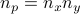
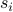
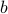
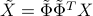

POD-based background removal for Particle Image Velocimetry
M.A. Mendeza, M. Raiolab, A. Masulloc, S. Discettib, A. Ianirob, R. Theunissenc, J.-M.Buchlina a von Karman Institute for Fluid Dynamics, Waterloosesteenweg 72, Sint-Genesius-Rode, Belgium b Aerospace Engineering Group, Universidad Carlos III de Madrid, Av. de la Universidad 30, Leganés, Spain c Department of Aerospace Engineering, University of Bristol, University Walk, BS81TR, Bristol, UK |
Objective
This website provides an implementation of the POD-based background removal algorithm described in the paper POD-based background removal for Particle Image Velocimetry. The method consists in approximating the background noise source and the PIV particle pattern with reduced order models (ROM) constructed from different portions of the video sequence’s POD spectra. Particles images and background noise are therefore distinguished according to a novel criterion: the higher degree of correlation of the background noise compared to the one of the particle pattern. Correlated background noise can be well approximated by a few of the first POD modes of the video, while the PIV particle pattern is equally distributed along the entire POD spectra. The proposed method is therefore a POD filter, which automatically identifies –and remove– the minimal number of modes representing the background noise.
POD Decomposition of PIV image recordings
Let a PIV image sequence be composed of grayscale images having a resolution of  pixels. By reshaping each image into a column vector , it is possible to assemble the sequence into a snapshots matrix :
The scope of low dimensional modeling of matrix is to find the approximation  of rank minimizing the
of rank minimizing the  norm () of the error matrix
norm () of the error matrix  :
:
The solution to this minimization problem, given by the Eckart-Young theorem, is the truncated singular value decomposition of the original matrix:
with ![Phi_r=[phi_1,dotsphi_{r}] in mathbb{R}^{n_ptimes r}](eqs/241601158-130.png) the orthonormal basis for the columns of , the orthonormal basis for the rows of , and the diagonal matrix containing the norm of each contribution.
the orthonormal basis for the columns of , the orthonormal basis for the rows of , and the diagonal matrix containing the norm of each contribution.
In low rank modeling for video analysis, the images forming the spatial basis  are referred to as eigenbackgrounds. By definition, the are eigenvectors of the outer product matrix and the are eigenvectors of the inner product matrix , while the singular values are the square root of the corresponding eigenvalues ;
are referred to as eigenbackgrounds. By definition, the are eigenvectors of the outer product matrix and the are eigenvectors of the inner product matrix , while the singular values are the square root of the corresponding eigenvalues ;
The solutions to the eigenvalue problems expressed in eq.s (4a) and (4b) are the discrete versions of the Fredholm Equations, leading, respectively, to the definitions of standard POD (preferable when ) or the Snapshot POD (preferable when ). It should be noted that both definitions are common in the analysis of turbulent flows where instead of intensities, element entries of column vectors  refer to velocities.
Observing that , eq. (3) can be also written as:
This form of the equation, with no emphasis on the temporal evolution of the modes, describes the decomposition as the projection of the data set (of rank ) into a lower dimensional space (of rank ) spanned by the orthonormal basis images . This formulation is common in Principal Component Analysis where it is introduced in the framework of variance maximization or minimal error of the approximation matrix .
The POD image preprocessing proposed in this work considers a PIV sequence as the sum of an ideal sequence  (i.e. bright particle images superimposed onto a black background) and a background noise sequence
(i.e. bright particle images superimposed onto a black background) and a background noise sequence  , each having their own singular value decomposition:
, each having their own singular value decomposition:
with and the eigenbackgrounds of and . Typical background noise in PIV has a high degree of spatial and temporal correlation, resulting in multiple rows and columns of being similar to each others. Therefore, the matrix is close to be rank deficient and can be well captured by few () of its modes, such that
with . It is worth observing that, besides allowing for the background noise to be time dependent –contrary to simple levelization approaches– the proposed method also allows for the video sequence to be temporally unresolved –contrary to time filtering approaches–.
A temporally unresolved sequence can in fact be constructed from column permutation of a time-resolved sequence, and the SVD decomposition in eq. (3) –thus the approximation in eq. (7)– is invariant under column permutation of the decomposed matrix.
From eq.s (6-7), the proposed method consist in constructing an approximation of and using the POD modes of . The method is based upon two assumptions, which are justified in the reference paper:
- Assumption 1
For
 , the contribution of the ideal PIV sequence is equally distributed, such that .
, the contribution of the ideal PIV sequence is equally distributed, such that .- Assumption 2
For
, the decomposition of the video is aligned with that of the ideal PIV sequence , such that .
Proposed Algorithm
Since and (Assumption 1), it is possible to approximate the ideal PIV video sequence underlying the video sequence (eq. (6)) filtering out its first POD modes:

Moreover, since (Assumption 2), it is reasonable to expect the decomposition of to be aligned with that of for . Therefore, using eq. (5} yields:

where is the basis for the reduced order model of . In addition to the equality of singular values, the modes approximating the PIV pattern should have a temporal , for , orthonormal to , i.e. , as discussed in the paper. These two constraints are used to identify the POD modes approximating the PIV pattern, to be retained in the preprocessing. Then, the method consists in constructing the reduced basis onto which project the set of images. If significant light variations appear between two frames and , the method should be applied independently on the two series of camera exposures. The pseudo-code of the proposed method is summarized in the following algorithm, where the tolerances in line 7 are set as and :
Reshape Images
 in }$
in }$Assemble Matrix }$
Compute }$
Diagonalize }$
Compute }$
Find }$label{line}
Construct
![tilde{Phi}=[phi_{r+1},dots phi_{n_t}]](eqs/338470197-130.png) }$
}$Compute  with }$
Reshape back to }$
Analysis of statistical convergence on synthetic PIV images with source density and .